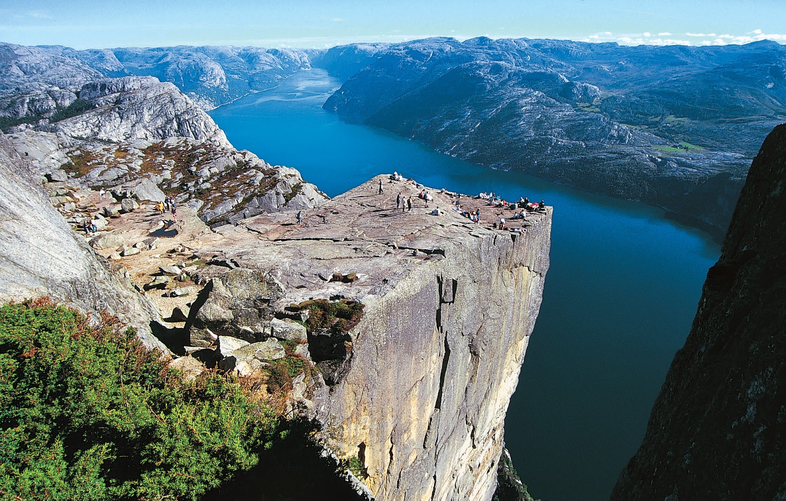
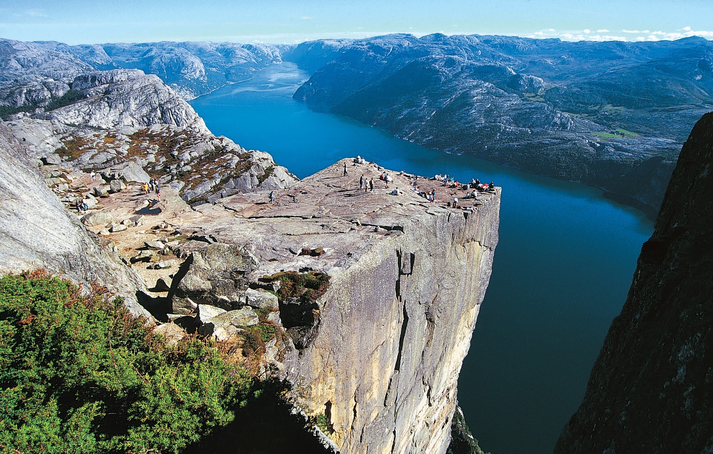

La Caminata
La caminata hasta la Roca del Púlpito tomará aproximadamente dos horas, más o menos una hora dependiendo del clima y tu forma física.
La caminata hasta la Roca del Púlpito tomará aproximadamente dos horas, más o menos una hora dependiendo del clima y tu forma física.
La Roca del Púlpito es parte de una montaña que tiene forma de púlpito.
La Roca del Púlpito está en Noruega.
¡La caminata es gratuita!